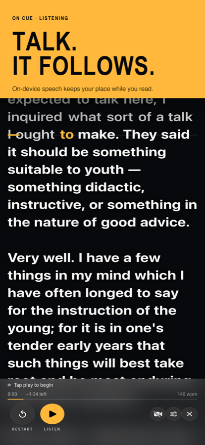
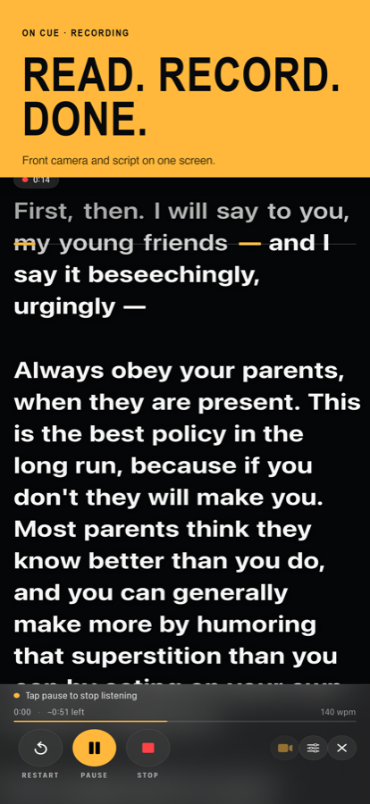
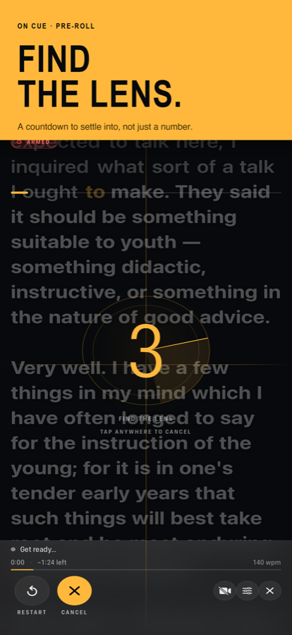
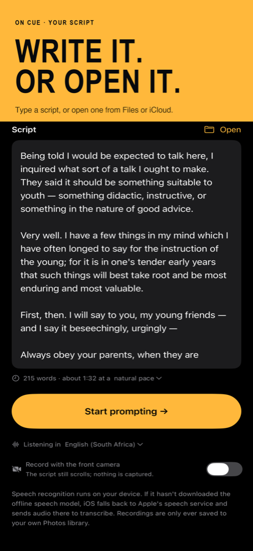

A teleprompter that follows your voice.
Speak, and the script scrolls with you. Stop, and it waits. Paraphrase a line, skip a word, or start a sentence again — it keeps your place, because it listens to what you actually say instead of scrolling at a fixed speed you have to chase.
Download on the App StoreiPhone and iPad · iOS 16 or later · Buy once, no subscription, no account




What it does
Follows your voice
Speech recognition matches what you say against your script and holds the line you are on at the reading line. Pause as long as you like. Say “scroll up” or “scroll down” to step a line without touching the phone.
Records as you read
One tap starts listening and filming together. Front-camera capture with the script overlaid, saved straight to Photos, at the resolution and frame rate your device supports.
Survives ad-libbing
Going off script is the normal case, not an error. Skip ahead, double back, or improvise a sentence — it finds you again rather than sitting still waiting for a word you never said.
Built to be read from
Adjustable text size and margins, four alignments, a reading line you can drag to sit near the lens, and per-word contrast so the script stays legible over a bright picture.
Knows how long it runs
Word count and estimated run time as you write. Elapsed time, time remaining and your pace while you speak — measured from how fast you actually talk, not assumed.
Stays on your device
Your script and your recordings never leave the phone. Speech recognition runs on-device wherever iOS can.